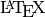

Sweave¶
What is Sweave¶
Sweave is a tool that enables users to embed R code into reports. It is a powerful tool for Literate programming that is the focus of this web-resource, however there are Alternatives to Sweave for the R statistical environment.
Before getting started with Sweave there are a few essentials that you must be familar with. If you have not yet visited any of the following pages then we strongly encourage you do so before proceeding.
Installing Sweave¶
The Sweave package is part of R. If you do not already have R installed on your machine then visit the R page. In addition to the R computing envrionment, it is also required that you have  installed. If is not yet available on your system or if you wish to learn more visit the LaTeX information page. Finally, before we get into the essentials of Sweave you will have be familiar with and have handy your programming editor.
A simple example¶
Sometimes in programming it is easiest for learning to jump right in with and example then to go back through that exampled and try to break it apart. Here is a fairly simple example that will run a Fisher’s exact test.
Open an editor and save the following as FishersExactTest.Rnw otherwise use the download link below.
\documentclass{article}
\usepackage{amsmath}
\usepackage[utf8]{inputenc}
\usepackage{textcomp}
\title{Fisher's Exact Test Sweave Example}
\author{Ender Wiggin}
\begin{document}
\maketitle
\section{The Problem}
This is a very simple example of how to use Sweave. In this problem we are interested in
is testing the null hypothesis that a drug is not related to the proportion of winners and losers.
\section{The Data}
\begin{center}
\begin{tabular}[h]{|c|c|c|}
\hline
& Winners & Losers \\
\hline
Drug & 90 & 10 \\
Placebo & 80 & 20 \\
\hline
\end{tabular}
\end{center}
<<data>>=
drug<-as.table(cbind(c(90,80),c(10,20)))
colnames(drug)<-c("Winners","Losers")
rownames(drug)<-c("Drug","Placebo")
print(drug)
@
\section{The Analysis}
<<test>>=
result <- fisher.test(drug)
print(result)
@
\end{document}
Download: FishersExactTest.Rnw
Now visit the following to get more familar with the example that you just ran.
Running the code (from a command prompt)¶
Sweave files look a lot like files. Running the next few commands will produce your Sweave report. R CMD Sweave tells R to use Sweave to evaluate the file and produces a .tex file. The next command pdflatex uses to produce a pdf report and the final line is a shortcut to view the report. For a more detailed explination of this example visit the Sweave example walkthrough. In order to run these commands you must first navigate to the directory containing FishersExactTest.Rnw. It is also nice to let each Sweave report reside in its own directory because both Sweave and produce numerous extra files during compilation.
- GNU/Linux
~$ R CMD Sweave FishersExactTest.Rnw ~$ pdflatex FishersExactTest.tex ~$ evince FishersExactTest.pdf
- Max OS X
~$ R CMD Sweave FishersExactTest.Rnw ~$ pdflatex FishersExactTest.tex ~$ open FishersExactTest.pdf
- Windows
~$ R CMD Sweave FishersExactTest.Rnw ~$ pdflatex FishersExactTest.tex ~$ adobereader FishersExactTest.pdf
Alternatively, we have created a tool (lpEdit) that uses Sweave syntax, but does not require the user to enter the command line.